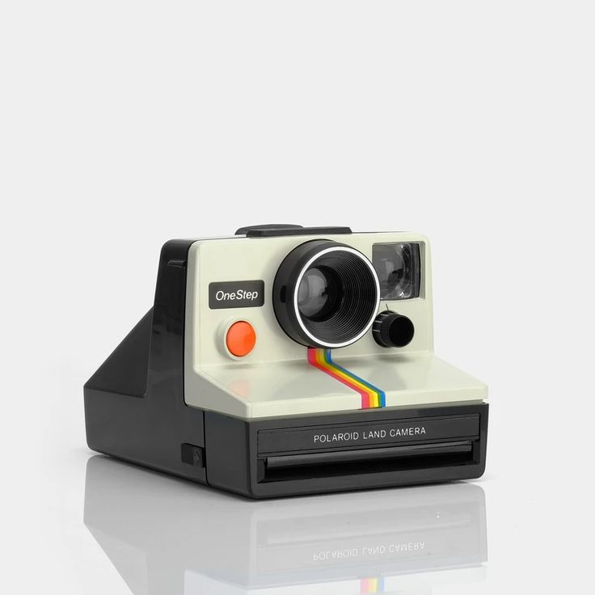

Instant Cameras
Instant cameras are known for their ability to produce a physical print of a photograph within moments of taking the picture. These cameras are popular for their nostalgic value and the tangible, immediate results they provide.
Features of Instant Cameras
Some key features of instant cameras include:
- Ability to print photos instantly
- Simple operation and user-friendly design
- Variety of film types and sizes
- Retro and nostalgic aesthetic
- Compact and portable
Popular Instant Camera Brands and Models
Some popular brands and models in the instant camera market include:
- Fujifilm Instax series (e.g., Fujifilm Instax Mini 11, Fujifilm Instax Wide 300)
- Polaroid Now and Polaroid Go
- Leica Sofort
Instant cameras are great for creating keepsakes, sharing prints with friends and family, and enjoying the charm of instant photography.